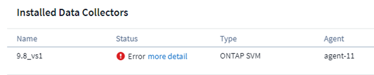

Security
Security
Configuring the ONTAP SVM Data Collector
 Suggest changes
Suggest changes
Workload Security uses data collectors to collect file and user access data from devices.
Before you begin
-
This data collector is supported with the following:
-
Data ONTAP 9.2 and later versions. For best performance, use a Data ONTAP version greater than 9.13.1.
-
SMB protocol version 3.1 and earlier.
-
NFS protocol version 4.0 and earlier
-
Flexgroup is supported from ONTAP 9.4 and later versions
-
ONTAP Select is supported
-
-
Only data type SVMs are supported. SVMs with infinite volumes are not supported.
-
SVM has several sub-types. Of these, only default, sync_source, and sync_destination are supported.
-
An Agent must be configured before you can configure data collectors.
-
Make sure that you have a properly configured User Directory Connector, otherwise events will show encoded user names and not the actual name of the user (as stored in Active Directory) in the “Activity Forensics” page.
-
For optimal performance, you should configure the FPolicy server to be on the same subnet as the storage system.
-
You must add an SVM using one of the following two methods:
-
By Using Cluster IP, SVM name, and Cluster Management Username and Password. This is the recommended method.
-
SVM name must be exactly as is shown in ONTAP and is case-sensitive.
-
-
By Using SVM Vserver Management IP, Username, and Password
-
If you are not able or not willing to use the full Administrator Cluster/SVM Management Username and Password, you can create a custom user with lesser privileges as mentioned in the “A note about permissions” section below. This custom user can be created for either SVM or Cluster access.
-
o You can also use an AD user with a role that has at least the permissions of csrole as mentioned in “A note about permissions” section below. Also refer to the ONTAP documentation.
-
-
-
Ensure the correct applications are set for the SVM by executing the following command:
clustershell::> security login show -vserver <vservername> -user-or-group-name <username>
Example output:

-
Ensure that the SVM has a CIFS server configured:
clustershell::>vserver cifs showThe system returns the Vserver name, CIFS server name and additional fields.
-
Set a password for the SVM vsadmin user. If using custom user or cluster admin user, skip this step.
clustershell::>security login password -username vsadmin -vserver svmname -
Unlock the SVM vsadmin user for external access. If using custom user or cluster admin user, skip this step.
clustershell::>security login unlock -username vsadmin -vserver svmname -
Ensure the firewall-policy of the data LIF is set to ‘mgmt’ (not ‘data’). Skip this step if using a dedicated management lif to add the SVM.
clustershell::>network interface modify -lif <SVM_data_LIF_name> -firewall-policy mgmt -
When a firewall is enabled, you must have an exception defined to allow TCP traffic for the port using the Data ONTAP Data Collector.
See Agent requirements for configuration information. This applies to on-premise Agents and Agents installed in the Cloud.
-
When an Agent is installed in an AWS EC2 instance to monitor a Cloud ONTAP SVM, the Agent and Storage must be in the same VPC. If they are in separate VPCs, there must be a valid route between the VPC’s.
Prerequisites for User Access Blocking
Keep the following in mind for User Access Blocking:
Cluster level credentials are needed for this feature to work.
If you are using cluster administration credentials, no new permissions are needed.
If you are using a custom user (for example, csuser) with permissions given to the user, then follow the steps below to give permissions to Workload Security to block user.
For csuser with cluster credentials, do the following from the ONTAP command line:
security login role create -role csrole -cmddirname "vserver export-policy rule" -access all security login role create -role csrole -cmddirname set -access all security login role create -role csrole -cmddirname "vserver cifs session" -access all security login role create -role csrole -cmddirname "vserver services access-check authentication translate" -access all security login role create -role csrole -cmddirname "vserver name-mapping" -access all
A Note About Permissions
Permissions when adding via Cluster Management IP:
If you cannot use the Cluster management administrator user to allow Workload Security to access the ONTAP SVM data collector, you can create a new user named “csuser” with the roles as shown in the commands below. Use the username “csuser” and password for “csuser” when configuring the Workload Security data collector to use Cluster Management IP.
To create the new user, log in to ONTAP with the Cluster management Administrator username/password, and execute the following commands on the ONTAP server:
security login role create -role csrole -cmddirname DEFAULT -access readonly
security login role create -role csrole -cmddirname "vserver fpolicy" -access all security login role create -role csrole -cmddirname "volume snapshot" -access all -query "-snapshot cloudsecure_*" security login role create -role csrole -cmddirname "event catalog" -access all security login role create -role csrole -cmddirname "event filter" -access all security login role create -role csrole -cmddirname "event notification destination" -access all security login role create -role csrole -cmddirname "event notification" -access all security login role create -role csrole -cmddirname "security certificate" -access all
security login create -user-or-group-name csuser -application ontapi -authmethod password -role csrole security login create -user-or-group-name csuser -application ssh -authmethod password -role csrole
Permissions when adding via Vserver Management IP:
If you cannot use the Cluster management administrator user to allow Workload Security to access the ONTAP SVM data collector, you can create a new user named “csuser” with the roles as shown in the commands below. Use the username “csuser” and password for “csuser” when configuring the Workload Security data collector to use Vserver Management IP.
To create the new user, log in to ONTAP with the Cluster management Administrator username/password, and execute the following commands on the ONTAP server. For ease, copy these commands to a text editor and replace the <vservername> with your Vserver name before and executing these commands on ONTAP:
security login role create -vserver <vservername> -role csrole -cmddirname DEFAULT -access none
security login role create -vserver <vservername> -role csrole -cmddirname "network interface" -access readonly security login role create -vserver <vservername> -role csrole -cmddirname version -access readonly security login role create -vserver <vservername> -role csrole -cmddirname volume -access readonly security login role create -vserver <vservername> -role csrole -cmddirname vserver -access readonly
security login role create -vserver <vservername> -role csrole -cmddirname "vserver fpolicy" -access all security login role create -vserver <vservername> -role csrole -cmddirname "volume snapshot" -access all
security login create -user-or-group-name csuser -application ontapi -authmethod password -role csrole -vserver <vservername>
Permissions for ONTAP Autonomous Ransomware Protection
If you are using cluster administration credentials, no new permissions are needed.
If you are using a custom user (for example, csuser) with permissions given to the user, then follow the steps below to give permissions to Workload Security to collect ARP related information from ONTAP.
For csuser with cluster credentials, do the following from the ONTAP command line:
security login rest-role create -role arwrole -api /api/storage/volumes -access readonly -vserver <cluster_name> security login rest-role create -api /api/security/anti-ransomware -access readonly -role arwrole -vserver <cluster_name> security login create -user-or-group-name csuser -application http -authmethod password -role arwrole
For more information, read about Integration with ONTAP Autonomous Ransomware Protection
Permissions for ONTAP Access Denied
If the Data Collector is added using cluster administration credentials, no new permissions are needed.
If the Collector is added using a custom user (for example, csuser) with permissions given to the user, follow the steps below to give Workload Security the necessary permission to register for Access Denied events with ONTAP.
For csuser with cluster credentials, execute the following commands from the ONTAP command line. Note that csrestrole is custom role and csuser is ontap custom user.
security login rest-role create -role csrestrole -api /api/protocols/fpolicy -access all -vserver <cluster_name> security login create -user-or-group-name csuser -application http -authmethod password -role csrestrole
For csuser with SVM credentials, execute the following commands from the ONTAP command line:
security login rest-role create -role csrestrole -api /api/protocols/fpolicy -access all -vserver <svm_name> security login create -user-or-group-name csuser -application http -authmethod password -role csrestrole -vserver <svm_name>
For more information, read about Integration with ONTAP Access Denied
Configure the data collector
-
Log in as Administrator or Account Owner to your Cloud Insights environment.
-
Click Workload Security > Collectors > +Data Collectors
The system displays the available Data Collectors.
-
Hover over the NetApp SVM tile and click *+Monitor.
The system displays the ONTAP SVM configuration page. Enter the required data for each field.
Field |
Description |
Name |
Unique name for the Data Collector |
Agent |
Select a configured agent from the list. |
Connect via Management IP for: |
Select either Cluster IP or SVM Management IP |
Cluster / SVM Management IP Address |
The IP address for the cluster or the SVM, depending on your selection above. |
SVM Name |
The Name of the SVM (this field is required when connecting via Cluster IP) |
Username |
User name to access the SVM/Cluster |
Password |
Password for the above user name |
Filter Shares/Volumes |
Choose whether to include or exclude Shares / Volumes from event collection |
Enter complete share names to exclude/include |
Comma-separated list of shares to exclude or include (as appropriate) from event collection |
Enter complete volume names to exclude/include |
Comma-separated list of volumes to exclude or include (as appropriate) from event collection |
Monitor Folder Access |
When checked, enables events for folder access monitoring. Note that folder create/rename and delete will be monitored even without this option selected. Enabling this will increase the number of events monitored. |
Set ONTAP Send Buffer size |
Sets the ONTAP Fpolicy send buffer size. If an ONTAP version prior to 9.8p7 is used and performance issue is seen, then the ONTAP send buffer size can be altered to get improved ONTAP performance. Contact NetApp Support if you do not see this option and wish to explore it. |
-
In the Installed Data Collectors page, use the options menu on the right of each collector to edit the data collector. You can restart the data collector or edit data collector configuration attributes.
Recommended Configuration for Metro Cluster
The following is recommended for Metro Cluster:
-
Connect two data collectors, one to the source SVM and another to the destination SVM.
-
The data collectors should be connected by Cluster IP.
-
At any moment of time, one data collector should be in running, another will be in error.
The current ‘running’ SVM’s data collector will show as Running. The current ‘stopped’ SVM’s
data collector will show as Error. -
Whenever there is a switchover, the state of the data collector will change from ‘running’ to ‘error’ and vice versa.
-
It will take up to two minutes for the data collector to move from Error state to Running state.
Service Policy
If using service policy from ONTAP version 9.9.1, in order to connect to the Data Source Collector, the data-fpolicy-client service is required along with the data service data-nfs, and/or data-cifs.
Example:
Testcluster-1::*> net int service-policy create -policy only_data_fpolicy -allowed-addresses 0.0.0.0/0 -vserver aniket_svm -services data-cifs,data-nfs,data,-core,data-fpolicy-client (network interface service-policy create)
In versions of ONTAP prior to 9.9.1, data-fpolicy-client need not be set.
Play-Pause Data Collector
2 new operations are now shown on kebab menu of collector (PAUSE and RESUME).
If the Data Collector is in Running state, you can Pause collection. Open the "three dots" menu for the collector and select PAUSE. While the collector is paused, no data is gathered from ONTAP, and no data is sent from the collector to ONTAP. This means no Fpolicy events will flow from ONTAP to the data collector, and from there to Cloud Insights.
Note that if any new volumes, etc. are created on ONTAP while the collector is Paused, Workload Security won’t gather the data and those volumes, etc. will not be reflected in dashboards or tables.
Keep the following in mind:
-
Snapshot purge won’t happen as per the settings configured on a paused collector.
-
EMS events (like ONTAP ARP) won’t be processed on a paused collector. This means if ONTAP identifies a ransomware attack, Cloud Insights Workload Security won’t be able to acquire that event.
-
Health notifications emails will NOT be sent for a paused collector.
-
Manual or Automatic actions (such as Snapshot or User Blocking) will not be supported on a paused collector.
-
On agent or collector upgrades, agent VM restarts/reboots, or agent service restart, a paused collector will remain in Paused state.
-
If the data collector is in Error state, the collector cannot be changed to Paused state. The Pause button will be enabled only if the state of the collector is Running.
-
If the agent is disconnected, the collector cannot be changed to Paused state. The collector will go into Stopped state and the Pause button will be disabled.
Troubleshooting
Known problems and their resolutions are described in the following table.
In the case of an error, click on more detail in the Status column for detail about the error.

| Problem: | Resolution: |
|---|---|
Data Collector runs for some time and stops after a random time, failing with: "Error message: Connector is in error state. Service name: audit. Reason for failure: External fpolicy server overloaded." |
The event rate from ONTAP was much higher than what the Agent box can handle. Hence the connection got terminated. |
Collector reports Error Message: “No local IP address found on the connector that can reach the data interfaces of the SVM”. |
This is most likely due to a networking issue on the ONTAP side. Please follow these steps: |
Message: "Failed to determine ONTAP type for [hostname: <IP Address>. Reason: Connection error to Storage System <IP Address>: Host is unreachable (Host unreachable)" |
1. Verify that the correct SVM IP Management address or Cluster Management IP has been provided. |
Error Message: "Connector is in error state. Service.name: audit. Reason for failure: External fpolicy server terminated." |
1. It is most likely that a firewall is blocking the necessary ports in the agent machine. Verify the port range 35000-55000/tcp is opened for the agent machine to connect from the SVM. Also ensure that there are no firewalls enabled from the ONTAP side blocking communication to the agent machine. |
No events seen in activity page. |
1. Check if ONTAP collector is in “RUNNING” state. If yes, then ensure that some cifs events are being generated on the cifs client VMs by opening some files. |
SVM Data Collector is in error state and Errror message is “Agent failed to connect to the collector” |
1. Most likely the Agent is overloaded and is unable to connect to the Data Source collectors. |
SVM Data Collector shows error message as "fpolicy.server.connectError: Node failed to establish a connection with the FPolicy server "12.195.15.146" ( reason: "Select Timed out")" |
Firewall is enabled in SVM/Cluster. So fpolicy engine is unable to connect to fpolicy server. |
Error Message: “Connector is in error state. Service name:audit. Reason for failure: No valid data interface (role: data,data protocols: NFS or CIFS or both, status: up) found on the SVM.” |
Ensure there is an operational interface (having role as data and data protocol as CIFS/NFS. |
The data collector goes into Error state and then goes into RUNNING state after some time, then back to Error again. This cycle repeats. |
This typically happens in the following scenario: |
Connector is in error state. Service name: audit. Reason for failure: Failed to configure (policy on SVM svmname. Reason: Invalid value specified for 'shares-to-include' element within 'fpolicy.policy.scope-modify: "Federal' |
The share names need to be given without any quotes. Edit the ONTAP SVM DSC configuration to correct the share names. |
There are existing fpolicies in the Cluster which are unused. What should be done with those prior to installation of Workload Security? |
It is recommended to delete all existing unused fpolicy settings even if they are in disconnected state. Workload Security will create fpolicy with the prefix "cloudsecure_". All other unused fpolicy configurations can be deleted. |
After enabling Workload Security, ONTAP performance is impacted: Latency becomes sporadically high, IOPs become sporadically low. |
While using ONTAP with Workload Security sometimes latency issues can be seen in ONTAP. There are a number of possible reasons for this as noted in the following: 1372994, 1415152, 1438207, 1479704, 1354659. All of these issues are fixed in ONTAP 9.13.1 and later; it is strongly recommended to use one of these later versions. |
Data collector is in error, shows this error message. |
Start with a new SVM with only NFS service configured. |
Data Collector shows the error message: |
1. On the Data Collectors page, scroll to the right of the data collector giving the error and click on the 3 dots menu. Select Edit. |
If you are still experiencing problems, reach out to the support links mentioned in the Help > Support page.